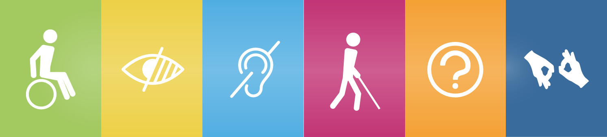

Importância da acessibilidade
Por que a inclusão social?
Primeiramente o porquê de tudo isso? Essa resposta já se vem quando pensamos na constante evolução que a sociedade vem vindo desde os seus princípios como humano, que o ponto mais forte que temos é a vivência em sociedade, somos seres sociáveis, ou seja, a inclusão tem o potencial de mostrar a diversidade, que não se vemos a qualquer hora, histórias, experiências e habilidades são pontos incríveis que as vezes nunca paramos para pensar. Dentre a redução da desigualdade, melhora de saúde mental, melhora na coesão em trabalhos que necessitam ser juntos, entre grandes outros aspectos.
Mas por que principalmente em escolas?
Onde temos nosso primeiro contato além de familiar com outras pessoas, se designa nas escolas, onde você passa o grande início da sua vida, isso significa que além de aprender matérias básicas como matemática, história, artes, entre outras, ela te mostra mundos que é a grandíssima sociedade, então esse local deve ser a maior porta de entrada que devemos ter para o aprendizado e respeito pela inclusão, onde podemos ajudar a favorecer a diversidade, igualdade, a preparação para o futuro com grande parte de pessoas que vão passar por você, assim mostrando um avanço na inovação com um grupo sociável à dignidade de cada um.
Lembrando que também se encaixa em leis
Alguns países, de exemplo o nossa, tem leis para proteção e busca de diretos de todas as pessoas, exemplo da lei que temos sobre esse assunto é:
Lei Brasileira de Inclusão (Lei nº 13.146/2015): A legislação brasileira estabelece que as pessoas com deficiência têm o direito à educação inclusiva em escolas regulares. Essa lei estabelece diretrizes e princípios para a inclusão dessas pessoas no sistema educacional.
Visando seguir os seguintes tópicos:
Não tirando o fato que também temos ajudas auxiliares diante todo esse assunto.
Artigos acadêmicos e científicos: Muitos pesquisadores e acadêmicos têm escrito sobre a importância da inclusão de pessoas com deficiência nas instituições escolares. Você pode procurar por artigos acadêmicos em bases de dados como o Scopus, o Google Scholar ou em periódicos específicos de educação inclusiva.
Relatórios de organizações de direitos humanos: Organizações como a Human Rights Watch, a Anistia Internacional e outras frequentemente publicam relatórios sobre a inclusão de pessoas com deficiência, incluindo a educação inclusiva.
Convenção sobre os Direitos das Pessoas com Deficiência das Nações Unidas: Este é um tratado internacional que estabelece os direitos das pessoas com deficiência, incluindo o direito à educação inclusiva. Ele é um dos principais documentos que promovem a inclusão em instituições educacionais.
Com isso queremos chegar aonde?
De início somos um grupo que na qual buscamos resolver um problema em acessibilidade nas escolas, visando que nem todas as escolas consegue obter todas as qualidades para comportar amplas pessoas, criamos isso no intuito de passar essas informações, elas serão passadas por vocês mesmos de maneira anônima sobre o devido local escolar, isso pode destacar tantos aspectos positivos ou negativos. Estamos em processo para ajudar a vocês terem acesso a conteúdo sobre a devida instituição e buscando ajudar essas instituições a melhorar a forma de suportes que precisam.